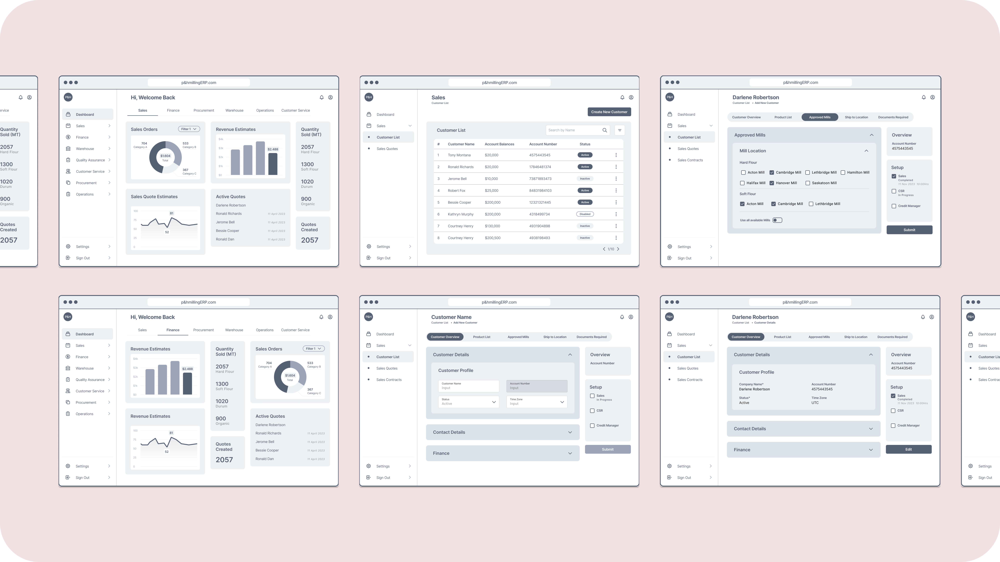

Perrish & Heimbecker Milling, UI/UX designer
Based in Winnipeg, Online Business Systems has over 30 years of experience in Digital Transformation and Cybersecurity consultancy working with Clients in Canada, USA and EMEA.
1. Role
Within my role as the UX Designer, I worked as a consultant for a company called P&H Milling founded in 1909, P&H has excelled in vertically integrating grain production and milling. However, current operational challenges due to reliance on Excel spreadsheets and undocumented systems present an opportunity to implement an ERP system.
Founded in 1909, P&H excels in vertically integrating grain production and milling. Facing operational challenges due to reliance on Excel spreadsheets and undocumented systems, we aim to implement an ERP system. As a lead UX Designer, I collaborated with cross-functional teams to gather requirements, design user-friendly interfaces, and conduct testing. My role was crucial in creating intuitive ERP solutions to enhance operational efficiency and support the company's modernization efforts. Moreover by developing wireframes, mockups, and high-fidelity prototypes we ensured the ERP system's design was consistent with P&H’s branding and user experience standards.
{kind=link}
2. Challenge
P&H faces operational challenges due to reliance on Excel spreadsheets and undocumented systems, presenting an opportunity to implement an ERP system. Currently, production planning, sales quoting, purchase orders, and inventory management are neither streamlined nor integrated, complicating planning and increasing losses. By introducing an ERP system, we aim to enhance efficiency and accuracy across all departments. This transformation will provide a centralized platform for managing operations, reducing errors, and improving decision-making processes. The ERP system will ultimately support better planning and reduce losses, driving overall business success and growth.
{kind=link}
3. Solution
To address P&H's operational challenges and ensure the ERP system meets their specific needs, we proposed starting with the design of wireframes. These wireframes served as visual prototypes of the ERP system's interface and functionalities. By presenting these to P&H, we were able to gather valuable client feedback and gain a clear understanding of their requirements.

- 1. List Page
- 2. Create Page
- 3. View Page
- 4. Edit Page
Enables users to sort, search, and view data at a glance, enhancing data accessibility, streamlining information management, and improving overall user efficiency.
Allows users to dynamically add and subtract content, facilitating real-time updates and modifications, thus enhancing flexibility, data accuracy, and operational efficiency.
Displays information allowing certain stakeholders to access and edit while restricting others ability to make any changes, ensuring data integrity.
Enables users to update content seamlessly, ensuring data is current and accurate while streamlining workflow.
{kind=link}
User flows allowed us to visually represent the steps a user takes to achieve a specific goal within a website or app. Furthermore tracking these user flows allowed us to eliminate friction in user journeys and reducing churn. By mapping out key interactions, we identifed and streamline critical steps. This approach allowed the ERP system to be intuitive, efficient, and tailored to P&H’s specific needs, ultimately enhancing operational efficiency and scalability.
{kind=link}